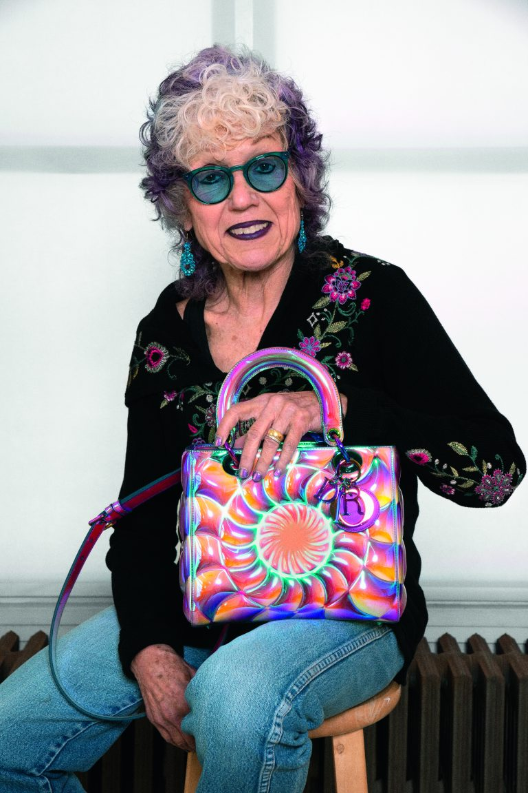
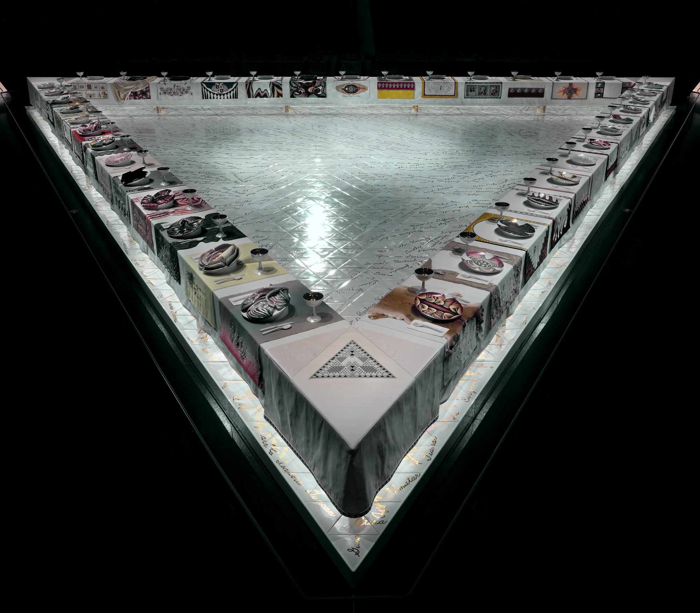

Women’s place in society has always been an uphill battle against patriarchal structures. However, within recent times, large-scale movements have been started, setting new precedents for how women function within society. One of these monumental movements is the feminist art movement of the 70s, which paved the way for not only women’s ability to practice art in the professional world, but also opened the door for female gender expression within the art itself. But this movement didn’t come from nowhere. Countless women and groups were involved with pioneering this movement, one of the most notable being Judy Chicago.
As a child Chicago, born Judith Sylvia Cohen, was involved in a community outreach program which encouraged her artistic journey and led her down her path as a professional artist. Later on, as a young artist in the late 60s, she graduated from UCLA, beginning her professional art career. However, as she would find out after exhibits like her lipstick series, being a woman artist in a largely male dominated field was not an easy task. Not only did she feel she was looked down upon for being a woman in what many at the time considered a man’s field, her work was also being viewed from the male gaze. Her lipstick exhibit, for example, had many minimalist cylinders, as minimalism was very popular at the time, that were supposed to mimic that of lipsticks. However when the critic’s reviews came in, not only was the reception not as popular as she would have hoped, but they also incorrectly attributed the shape of the cylinders to that of phallic imagery. It was a clear demonstration that the art field was being consumed through a male lens which encouraged Chicago to take a look inward as not only an artist but also as a woman.
She began training her art to explicitly express female experiences which was a practice rarely heard of at the time. Eventually she adopted the art persona Judy Chicago stating that she “devests herself of all names imposed upon her through male social dominance and freely chooses her own name”. By this point Chicago was a rolling stone, and she was only picking up more momentum. Eventually, in 1974, Chicago released the large-scale collaborative art exhibit named The Dinner Party. The piece she’s undoubtedly best known for. The exhibit seeks to call attention to important and powerful women of history that are often disregarded within our patriarchal culture. 39 seats within a triangle formation point out some notable figures, some real historical furies and other women of tales. Reclaiming societally objectified femininity, each represents a woman with a flowering vaginally shaped china plate along with woven and embroidered pieces with their names and other imagery relating to that woman. All the mediums and imagery of this exhibit are art forms that have been deemed feminine and art of crafts rather than true professionalism. There are then dozens of women’s names on the ground bringing attention to even more historically ignored women. This piece was extremely large, both physically and metaphorically as it dominated the art scene. With both raving and harsh reviews, the impact of the piece was clear, there was a place within the professional art world for, what we would call today, feminist art.

Chicago, with the aid of her collaborators, were attributed the pioneers of the feminist art movement that provoked and pervaded the 70s. And like the movement, Chicago didn’t stop there were other projects she took on such as forming feminist art organizations, teaching feminist art classes, and making other advocacy projects like her holocaust exhibit. Chicago’s bold, unfiltered, feminist art sent shock waves through the art community, forever changing how people navigate the art world today. Within this assortment of reading you’ll find a plethora of information surrounding Chicago, her beliefs, her motivations, her processes, her teachings as well as the larger effects of the feminist art movement, what doors her actions were able to open and the effects it’s left on our culture and art world today.